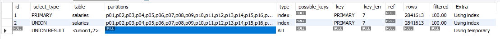
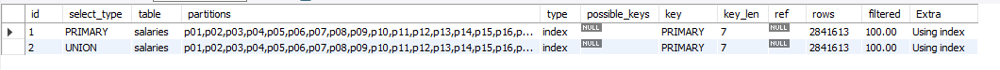
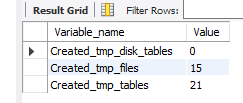

mysql临时表
- 1. 生成临时表的条件
- 1.1. UNION statements
- 1.2. somw views, such those that use the TEMPTABLE algorithm, UNION or aggregation
- 1.3. derived tables
- 1.4. table created for subquery or semijoin materialization
- 1.5. common table expressions
- 1.6. DISTINCT combined with ORDER BY may require a temporary table
- 1.7. order by和group by的子句不一样时，或者表连接中order by或group by的列是被驱动表中的列
- 1.8. INSERT ... SELECT
- 1.9. multiple-table update statements
- 1.10. GROUP_CONCAT() or COUNT(DISTINCT)
- 1.11. SQL_SMALL_RESULT
下面只介绍在查询中生成的临时表, 总结下来就是, 感觉用临时表了, 就去explain看下是不是到底用了, 最好每个sql都查下
在EXPLAIN中可以查看有没有用到temptable:EXPLAIN SELECT emp_no FROM employees.salaries union select emp_no from employees.salaries;

但是使用union all没有临时表EXPLAIN SELECT emp_no FROM employees.salaries union all select emp_no from employees.salaries;:

然后执行show status like "%tmp%";如果有临时表会在下面的字段中体现:

新增一个临时表会在对应的字段上+1
生成临时表的条件
UNION statements
- 但是
UNION ALL不会创建临时表 - 不是由全局的
ORDER BY引起的 - 这个可以在上面的例子中看到, 执行
union all没有用到临时表
somw views, such those that use the TEMPTABLE algorithm, UNION or aggregation
这个没有实际用过, 待补充
derived tables
这个执行下面sql但是没有使用临时表, 有用的还是因为加了group by语法, 待解决:
1 |
|
table created for subquery or semijoin materialization
这里说是使用子查询的是会用到, 但是子查询和驱动表的区别是啥
common table expressions
使用with语法的时候会创建临时表
DISTINCT combined with ORDER BY may require a temporary table
1 | explain select distinct salary from employees.salaries order by salary ; |
order by和group by的子句不一样时，或者表连接中order by或group by的列是被驱动表中的列
INSERT ... SELECT
to evaluate INSERT ... SELECT statements that select from and insert into the same table, mysql creates an internal temporary table to hold te rows form the SELECT, then inserts those rows into the target table.
multiple-table update statements
GROUP_CONCAT() or COUNT(DISTINCT)
为啥试了没有???
1 | explain select count(distinct salary) from employees.salaries; |
SQL_SMALL_RESULT
for queries that use the SQL_SMALL_RESULT modifier, MySQL users an in-memory temporary table, unless the query also contains elements that require on-disk storage